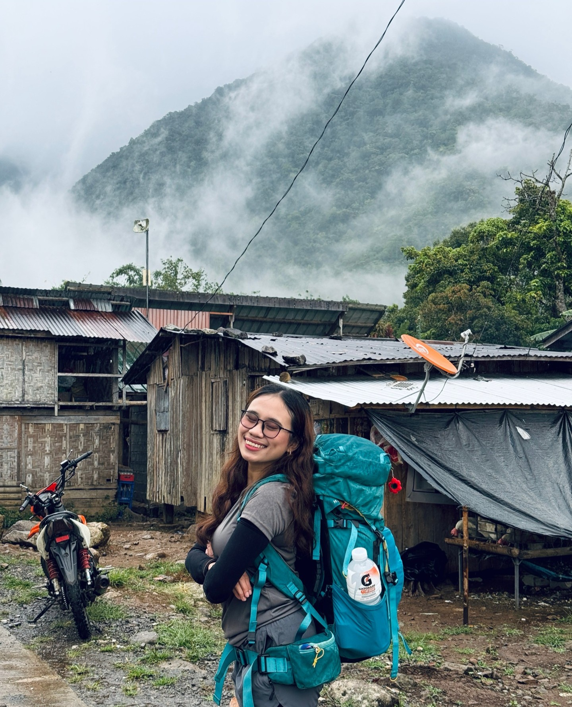
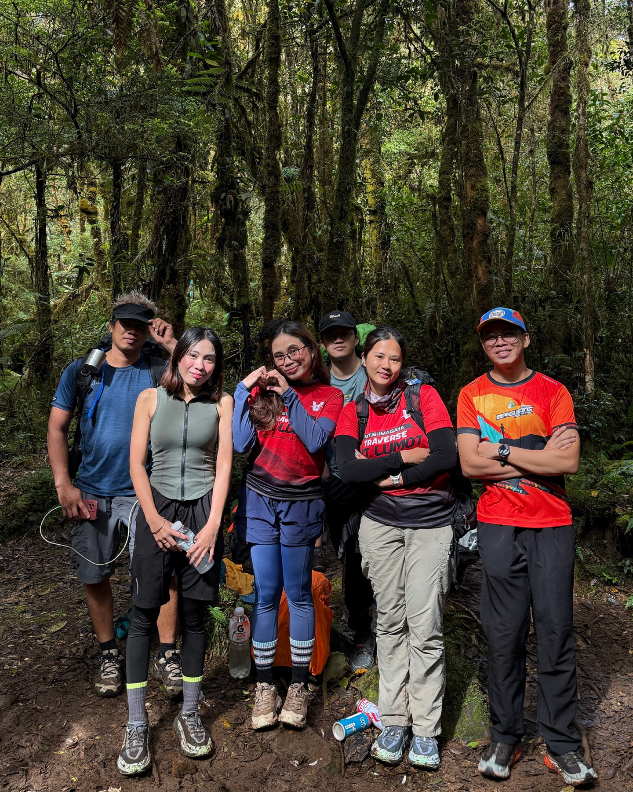
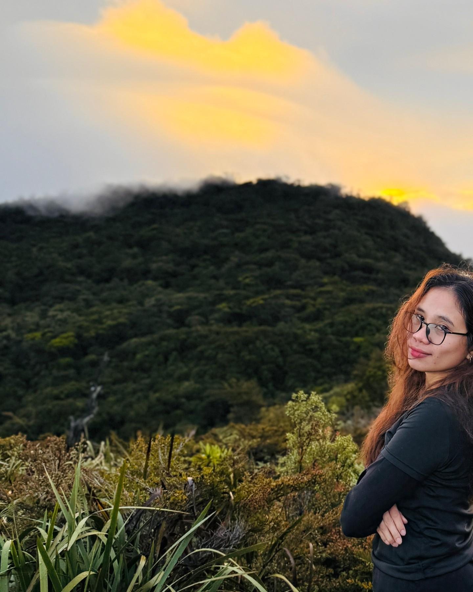

The moss speaks first. Before you see Sumagaya, you hear it — a silence so complete it sounds like pressure. The forest at 2,248 meters doesn't echo. It swallows.
- Elevation
- 2,248 m (7,375 ft)
- Location
- Claveria, Misamis Oriental
- Range
- Central Mindanao Cordillera, with Mt. Lumot and Mt. Balatukan
- Jump-off
- Barangay Mat-i, departing around 6 AM
- Itinerary
- A 12-hour day push, or a 2–4 day expedition across camps
- Difficulty
- 9 / 9
- Humidity
- 84–90%
- Permits
- Required, from four offices
- Ancestral domain
- Sacred ground of the Talaandig people
- Of note
- Memorial to Cebu Pacific Flight 387 (2 February 1998, 104 lives). Nineteen frog species and four Nepenthes pitcher plants found nowhere else.
What Awaits at the Trailhead

You start in Barangay Mat-i before dawn. The 6 AM departure time isn't arbitrary — it's the edge of reasonable daylight math. A 12-hour day push will land you back at base after dark. A 2–4 day expedition spreads the suffering across camps and lets hypothermia take turns with altitude. The permits come from four offices. The permits exist because the mountain has answers, and not all of them are survivable.
The Central Mindanao Cordillera groups Sumagaya with Mount Lumot and Mount Balatukan — three peaks that define what "formidable" looks like in Northern Mindanao. Most who climb Sumagaya traverse to Lumot. Finishing one summit and discovering you're only halfway through tends to reorder your understanding of your own limits.
The Climb Itself

You move upward through a wall of vegetation. Moss coats every surface — trees, rocks, your pack, your vision. Humidity between 84–90% means the air itself is heavy, demanding to be swallowed rather than breathed. Your lungs work harder. Your legs work harder. The trail, where there is one, vanishes and reappears. You navigate by feel and instinct and the occasional blaze someone carved into a moss-covered trunk years ago.
The terrain shifts as you climb. Near the summit, technical scrambles demand handholds and balance and the willingness to move upward over rock when the exposure opens up and you remember you're very, very high. The ferns thin. The air thins. The thought that you might not make it back down becomes real in a way it wasn't at kilometer two.
The Living Mountain


This forest is not a backdrop. Nineteen species of frogs call these slopes home. Four species of pitcher plants — Nepenthes, carnivorous plants found nowhere else in the world — grow in the mist near the summit. Scientists still don't fully understand the ecosystem. The mountain is telling them stories about itself in a language biology is still learning to speak. When you walk through Sumagaya, you're walking through a living discovery.

The Talaandig people knew this mountain long before climbers came. It is sacred ground — not as metaphor, but as fact. This ridge is part of their ancestral territory, their spiritual geography. Climb it as a guest, not a conqueror.
The Weight of History


On February 2, 1998, Flight 387 fell from the sky and came to rest on these slopes. 104 people. The forest received them and, in its slow patient way, is still receiving them — metal oxidizing, wreckage settling deeper into the soil, the moss growing over everything. A memorial marks the site. Climbers find pieces of fuselage scattered in the ferns. The mountain keeps what it's given.

When you summit Sumagaya, you summit over history. You stand in a place that is beautiful and tragic and ancient and recent all at once. The views, if the clouds allow them, stretch across the Cordillera. But most days you see only the forest and the mist and the weight of what the mountain holds.
This Is Not a Casual Climb

The rating system stops at 9. Sumagaya earns it. Not because it's the highest or the longest, but because it demands everything — your technique, your endurance, your mental resilience, your respect. The mountain asks questions. Sometimes the answers kill you. Sometimes they transform you. There's rarely a middle ground.
But climbers come back. And when they return, they don't talk about summiting. They talk about understanding something. About the forest. About their own fragility. About standing in a place where the sacred and the tragic share the same ridge, and how that changes what a mountain means.
← Back to Dashboard